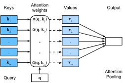

Truy Vấn, Khóa và Giá Trị¶
Cho đến nay tất cả các mạng mà chúng ta đã xem xét đều phụ thuộc vào đầu vào có kích thước được xác định rõ ràng. Ví dụ, các ảnh trong ImageNet có kích thước \(224 \times 224\) pixel và CNN được điều chỉnh cụ thể cho kích thước này. Ngay cả trong xử lý ngôn ngữ tự nhiên, kích thước đầu vào cho RNN cũng được xác định rõ ràng và cố định. Kích thước thay đổi được giải quyết bằng cách xử lý tuần tự một token tại một thời điểm, hoặc bằng các hạt nhân tích chập được thiết kế đặc biệt [Kalchbrenner.Grefenstette.Blunsom.2014]. Cách tiếp cận này có thể dẫn đến những vấn đề đáng kể khi đầu vào thực sự có kích thước thay đổi với nội dung thông tin thay đổi, chẳng hạn như trong sec_seq2seq trong quá trình biến đổi văn bản [Sutskever.Vinyals.Le.2014]. Đặc biệt, với các chuỗi dài, việc theo dõi tất cả những gì đã được tạo ra hoặc thậm chí được mạng xem trở nên khá khó khăn. Ngay cả các phương pháp heuristic theo dõi rõ ràng như được đề xuất bởi yang2016neural cũng chỉ mang lại lợi ích hạn chế.
So sánh điều này với cơ sở dữ liệu. Ở dạng đơn giản nhất, chúng là tập hợp các khóa (\(k\)) và giá trị (\(v\)). Ví dụ, cơ sở dữ liệu \(\mathcal{D}\) của chúng ta có thể gồm các bộ {("Zhang", "Aston"), ("Lipton", "Zachary"), ("Li", "Mu"), ("Smola", "Alex"), ("Hu", "Rachel"), ("Werness", "Brent")} với họ là khóa và tên là giá trị. Chúng ta có thể thao tác trên \(\mathcal{D}\), chẳng hạn với truy vấn (\(q\)) chính xác cho "Li" sẽ trả về giá trị "Mu". Nếu ("Li", "Mu") không phải là bản ghi trong \(\mathcal{D}\), sẽ không có câu trả lời hợp lệ. Nếu chúng ta cũng cho phép khớp gần đúng, chúng ta sẽ lấy ("Lipton", "Zachary") thay thế. Ví dụ khá đơn giản và tầm thường này tuy nhiên dạy cho chúng ta một số điều hữu ích:
- Chúng ta có thể thiết kế các truy vấn \(q\) hoạt động trên các cặp (\(k\),\(v\)) theo cách hợp lệ bất kể kích thước cơ sở dữ liệu.
- Cùng một truy vấn có thể nhận các câu trả lời khác nhau, tùy theo nội dung của cơ sở dữ liệu.
- "Mã" được thực thi để thao tác trên không gian trạng thái lớn (cơ sở dữ liệu) có thể khá đơn giản (ví dụ: khớp chính xác, khớp gần đúng, top-\(k\)).
- Không cần nén hoặc đơn giản hóa cơ sở dữ liệu để làm cho các thao tác hiệu quả.
Rõ ràng là chúng ta sẽ không giới thiệu cơ sở dữ liệu đơn giản ở đây nếu không phải để giải thích deep learning. Thực vậy, điều này dẫn đến một trong những khái niệm thú vị nhất được giới thiệu trong deep learning trong thập kỷ qua: cơ chế attention [Bahdanau.Cho.Bengio.2014]. Chúng ta sẽ đề cập đến các chi tiết cụ thể của ứng dụng nó trong dịch máy sau. Hiện tại, chỉ cần xem xét điều sau: ký hiệu bởi \(\mathcal{D} \stackrel{\textrm{def}}{=} \{(\mathbf{k}_1, \mathbf{v}_1), \ldots (\mathbf{k}_m, \mathbf{v}_m)\}\) một cơ sở dữ liệu gồm \(m\) bộ khóa và giá trị. Hơn nữa, ký hiệu bởi \(\mathbf{q}\) một truy vấn. Sau đó chúng ta có thể định nghĩa attention trên \(\mathcal{D}\) là
trong đó \(\alpha(\mathbf{q}, \mathbf{k}_i) \in \mathbb{R}\) (\(i = 1, \ldots, m\)) là các trọng số attention vô hướng. Bản thân phép toán thường được gọi là attention pooling. Tên attention xuất phát từ thực tế là phép toán đặc biệt chú ý đến các số hạng mà trọng số \(\alpha\) đáng kể (tức là lớn). Do đó, attention trên \(\mathcal{D}\) tạo ra một tổ hợp tuyến tính của các giá trị chứa trong cơ sở dữ liệu. Trên thực tế, điều này chứa ví dụ trên như một trường hợp đặc biệt khi tất cả trừ một trọng số bằng không. Chúng ta có một số trường hợp đặc biệt:
- Các trọng số \(\alpha(\mathbf{q}, \mathbf{k}_i)\) không âm. Trong trường hợp này, đầu ra của cơ chế attention được chứa trong nón lồi được tạo ra bởi các giá trị \(\mathbf{v}_i\).
- Các trọng số \(\alpha(\mathbf{q}, \mathbf{k}_i)\) tạo thành một tổ hợp lồi, tức là \(\sum_i \alpha(\mathbf{q}, \mathbf{k}_i) = 1\) và \(\alpha(\mathbf{q}, \mathbf{k}_i) \geq 0\) với mọi \(i\). Đây là thiết lập phổ biến nhất trong deep learning.
- Chính xác một trong các trọng số \(\alpha(\mathbf{q}, \mathbf{k}_i)\) là \(1\), trong khi tất cả các trọng số khác là \(0\). Điều này tương tự như một truy vấn cơ sở dữ liệu truyền thống.
- Tất cả các trọng số bằng nhau, tức là \(\alpha(\mathbf{q}, \mathbf{k}_i) = \frac{1}{m}\) với mọi \(i\). Điều này tương đương với việc lấy trung bình trên toàn bộ cơ sở dữ liệu, còn được gọi là average pooling trong deep learning.
Một chiến lược phổ biến để đảm bảo các trọng số tổng bằng \(1\) là chuẩn hóa chúng thông qua
Đặc biệt, để đảm bảo các trọng số cũng không âm, người ta có thể dùng hàm mũ. Điều này có nghĩa là chúng ta bây giờ có thể chọn bất kỳ hàm \(a(\mathbf{q}, \mathbf{k})\) nào và sau đó áp dụng phép toán softmax được dùng cho các mô hình đa thức cho nó thông qua
Phép toán này có sẵn trong tất cả các framework deep learning. Nó khả vi và gradient của nó không bao giờ biến mất, tất cả đều là các thuộc tính mong muốn trong một mô hình. Lưu ý tuy nhiên, cơ chế attention được giới thiệu ở trên không phải là lựa chọn duy nhất. Ví dụ, chúng ta có thể thiết kế mô hình attention không khả vi có thể được huấn luyện bằng các phương pháp học tăng cường [Mnih.Heess.Graves.ea.2014]. Như người ta có thể mong đợi, việc huấn luyện mô hình như vậy khá phức tạp. Do đó phần lớn nghiên cứu attention hiện đại tuân theo khuôn khổ được phác thảo trong fig_qkv. Do đó chúng ta tập trung giải thích vào họ các cơ chế khả vi này.

Điều khá đáng chú ý là "mã" thực tế để thực thi trên tập hợp khóa và giá trị, cụ thể là truy vấn, có thể khá súc tích, ngay cả khi không gian để thao tác trên là đáng kể. Đây là một thuộc tính mong muốn cho một lớp mạng vì nó không yêu cầu quá nhiều tham số để học. Cũng thuận tiện không kém là thực tế là attention có thể hoạt động trên các cơ sở dữ liệu lớn tùy ý mà không cần thay đổi cách thực hiện phép toán attention pooling.
Trực Quan Hóa¶
Một trong những lợi ích của cơ chế attention là nó có thể khá trực quan, đặc biệt khi các trọng số không âm và tổng bằng \(1\). Trong trường hợp này chúng ta có thể diễn giải các trọng số lớn như một cách để mô hình chọn các thành phần có liên quan. Mặc dù đây là trực giác tốt, điều quan trọng là phải nhớ rằng đó chỉ là vậy, một trực giác. Dù sao, chúng ta có thể muốn trực quan hóa hiệu ứng của nó trên tập hợp khóa đã cho khi áp dụng nhiều truy vấn khác nhau. Hàm này sẽ hữu ích sau này.
Do đó chúng ta định nghĩa hàm show_heatmaps. Lưu ý rằng nó không lấy một ma trận (của các trọng số attention) làm đầu vào mà là một tensor có bốn trục, cho phép một mảng các truy vấn và trọng số khác nhau. Do đó đầu vào matrices có hình dạng (số hàng để hiển thị, số cột để hiển thị, số truy vấn, số khóa). Điều này sẽ hữu ích sau này khi chúng ta muốn trực quan hóa cơ chế hoạt động để thiết kế Transformer.
def show_heatmaps(matrices, xlabel, ylabel, titles=None, figsize=(2.5, 2.5),
cmap='Reds'):
"""Show heatmaps of matrices."""
d2l.use_svg_display()
num_rows, num_cols, _, _ = matrices.shape
fig, axes = d2l.plt.subplots(num_rows, num_cols, figsize=figsize,
sharex=True, sharey=True, squeeze=False)
for i, (row_axes, row_matrices) in enumerate(zip(axes, matrices)):
for j, (ax, matrix) in enumerate(zip(row_axes, row_matrices)):
if tab.selected('pytorch', 'mxnet', 'tensorflow'):
pcm = ax.imshow(d2l.numpy(matrix), cmap=cmap)
if tab.selected('jax'):
pcm = ax.imshow(matrix, cmap=cmap)
if i == num_rows - 1:
ax.set_xlabel(xlabel)
if j == 0:
ax.set_ylabel(ylabel)
if titles:
ax.set_title(titles[j])
fig.colorbar(pcm, ax=axes, shrink=0.6);
Để kiểm tra nhanh, hãy trực quan hóa ma trận đơn vị, đại diện cho trường hợp trong đó trọng số attention là \(1\) chỉ khi truy vấn và khóa giống nhau.
attention_weights = d2l.reshape(d2l.eye(10), (1, 1, 10, 10))
show_heatmaps(attention_weights, xlabel='Keys', ylabel='Queries')
Tóm Tắt¶
Cơ chế attention cho phép chúng ta tổng hợp dữ liệu từ nhiều cặp (khóa, giá trị). Cho đến nay cuộc thảo luận của chúng ta khá trừu tượng, chỉ mô tả một cách để gộp dữ liệu. Chúng ta chưa giải thích những truy vấn, khóa và giá trị bí ẩn đó có thể đến từ đâu. Một số trực giác có thể giúp ích ở đây: ví dụ, trong một thiết lập hồi quy, truy vấn có thể tương ứng với vị trí mà hồi quy nên được thực hiện. Các khóa là các vị trí mà dữ liệu quá khứ đã được quan sát và các giá trị là các giá trị (hồi quy) chính chúng. Đây là cái gọi là ước lượng Nadaraya--Watson [Nadaraya.1964, Watson.1964] mà chúng ta sẽ nghiên cứu trong phần tiếp theo.
Theo thiết kế, cơ chế attention cung cấp một phương tiện kiểm soát khả vi qua đó mạng nơ-ron có thể chọn các phần tử từ một tập hợp và xây dựng một tổng có trọng số liên quan trên các biểu diễn.
Bài Tập¶
- Giả sử bạn muốn tái lập trình các khớp (khóa, truy vấn) gần đúng như được sử dụng trong cơ sở dữ liệu cổ điển, bạn sẽ chọn hàm attention nào?
- Giả sử rằng hàm attention được cho bởi \(a(\mathbf{q}, \mathbf{k}_i) = \mathbf{q}^\top \mathbf{k}_i\) và rằng \(\mathbf{k}_i = \mathbf{v}_i\) với \(i = 1, \ldots, m\). Ký hiệu bởi \(p(\mathbf{k}_i; \mathbf{q})\) phân phối xác suất trên các khóa khi sử dụng chuẩn hóa softmax trong :eqref:
eq_softmax_attention. Chứng minh rằng \(\nabla_{\mathbf{q}} \mathop{\textrm{Attention}}(\mathbf{q}, \mathcal{D}) = \textrm{Cov}_{p(\mathbf{k}_i; \mathbf{q})}[\mathbf{k}_i]\). - Thiết kế một công cụ tìm kiếm khả vi sử dụng cơ chế attention.
- Xem xét thiết kế của Squeeze and Excitation Networks [Hu.Shen.Sun.2018] và diễn giải chúng qua lăng kính của cơ chế attention.